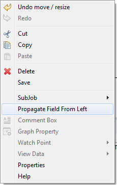
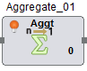
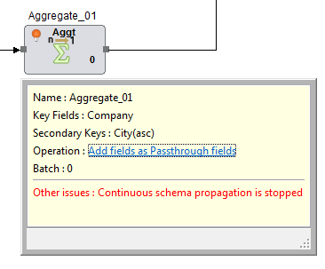

Schema Propagation
Schema Propagation is a feature to propagate schema from one component to next connected component.The Schema propagation gets initiated by clicking Propagate Field from Left button present in properties window or by right-clicking on component and select Propagate Field from Left action.
On properties window of straightpull or transform categories component ,Propagate Field from Left button initiates schema propagation.
User can also initiate schema propagation by right-clicking on straightpull or transform categories component and select Propagate Field from Left action.

Once Schema propagation is initiated,schema gets propagated through all the components in pipeline, until a transform categories component is encountered.On a transform categories component, a bulb symbol gets displayed notifying that the propagation stops at this component.

Tooltip gets displayed on mouse hovering action on bulb icon.
